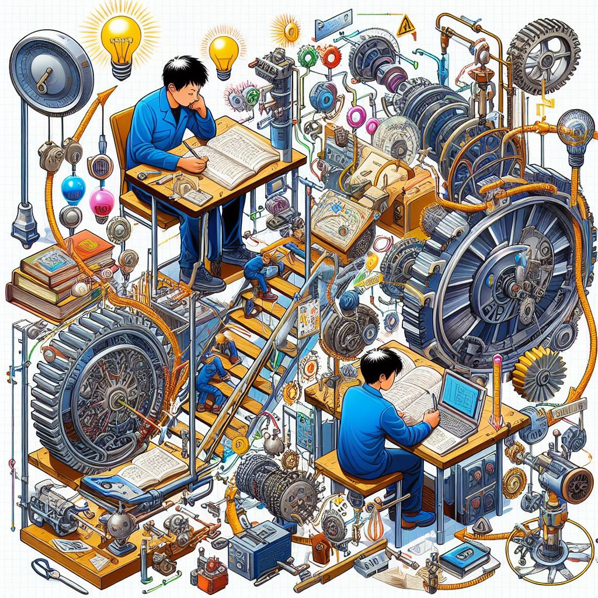
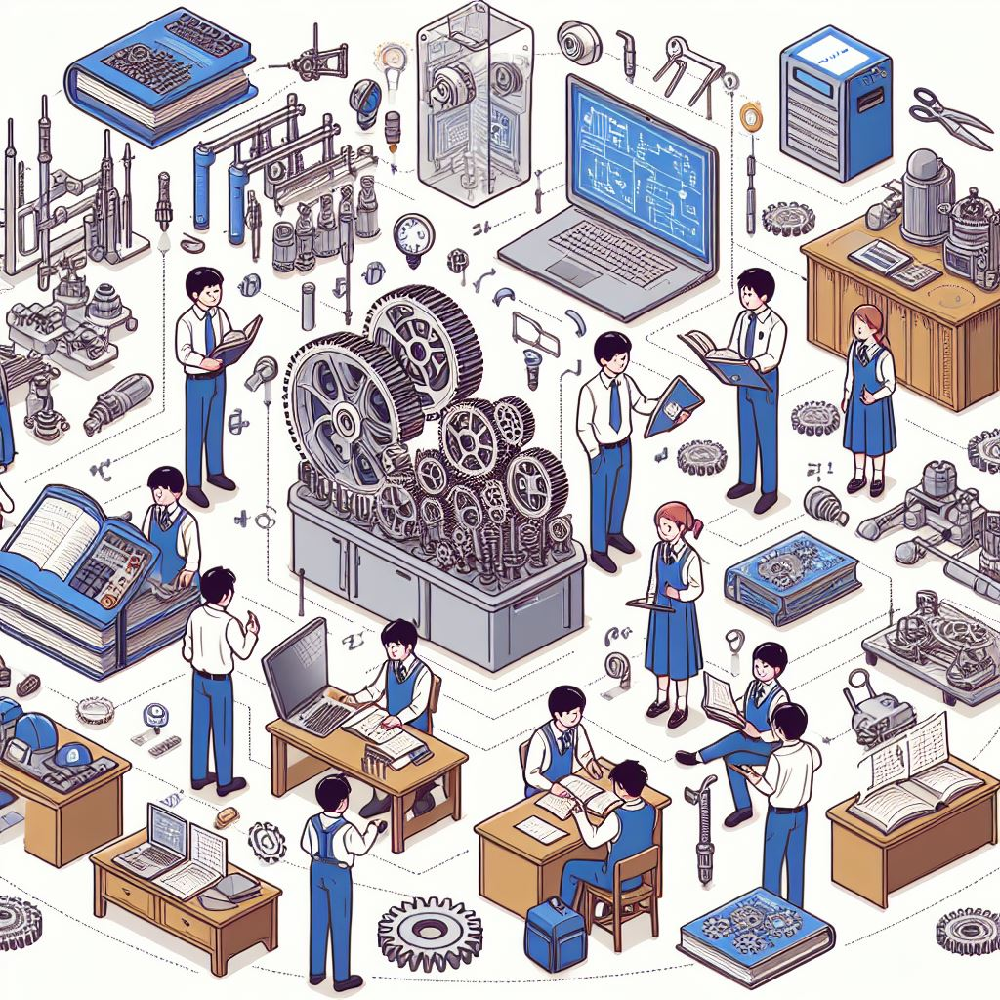

エネルギー機械コースでは、以下の技術を学ぶことを目指しています ①輸送機械や発電所等の産業インフラの設計と運用に必要な技術：産業用の機械や発電所の設計、運用、および保守に必要なスキルを習得します。 ②水素エネルギー等のクリーンエネルギーの創生と貯蔵に関する技術：持続可能なエネルギー源である水素エネルギーの生成、貯蔵、および利用について学びます。 ③自然災害の予測分析や対策に関する技術：災害の予測モデルの開発や対策の立案に必要なスキルを身につけます。


以下に勉強科目を示します。機械工学概論、基礎製図、CAD製図、機械設計製図、機械力学、材料力学、熱力学、流れ学、機械工作法、材料学、エネルギー変換工学、機械設計、生産加工工学、制御工学、卒業研究
本校は多くの企業から高く評価されており、毎年多くの求人が寄せられています。
求人企業数は例年数百社を数え、本科の求人倍率は毎年20倍を超え、専攻科は100倍前後と非常に高い数値を保っています。
それだけでなく、難関大学へ、できるだけ安く、できるだけ効率よく進学したい、という方にも、本校は非常にオススメです。
高専の卒業生には、就職・進学のさまざまな進路が約束されています。
高専生は、ものづくりの創造的・実践的技術者として企業から期待されています。
大学・大学院への進学を考えている中学生にとって、今や高専からの大学・大学院進学は当たり前です。
塾要らず、センター試験なしで大学へ編入学するも良し、専攻科を経て大学院へ進学するも良し。
高専で磨いた「ものづくり技術力」に大学・大学院での「先端的な理論の力」が加われば、一層大きな力を発揮できることでしょう。
そしてそのすべてにおいて、私たちは、全力で皆さんをサポートします。勉強科目
進路